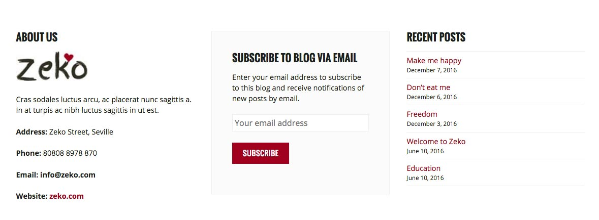
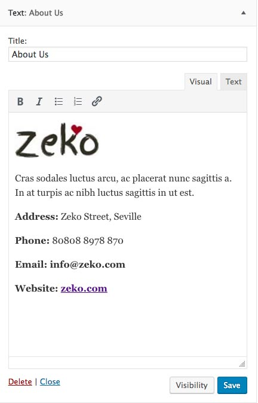
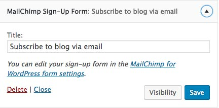
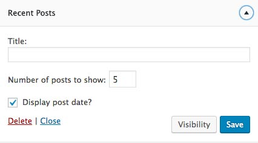
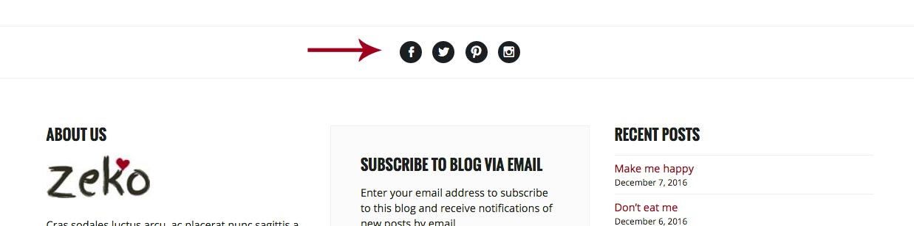
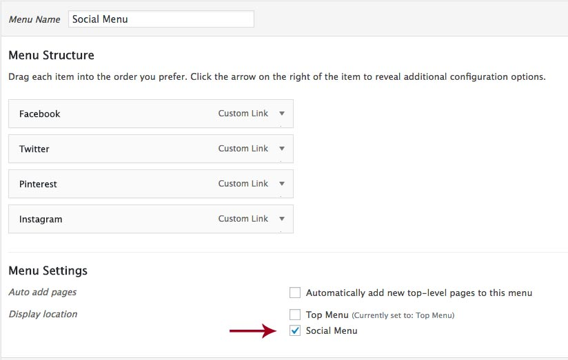
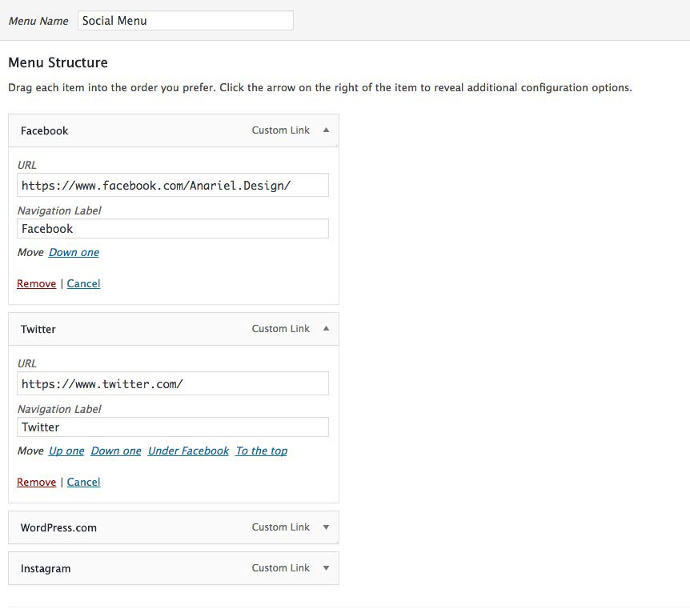

5. Footer

Zeko supports three footer widget areas: First Footer Widget Area , Second Footer Widget Area, and Third Footer Widget Area. When you add widgets to any Footer Widget Area they will automatically be displayed on all pages of your website.
5.1 First Footer Widget Area

We used Text Widget with this content:
5.2 Second Footer Widget Area

In the demo we used MailChimp Sign-Up Form widget.
5.3 Third Footer Widget Area

In the demo we used Recent Posts widget.
5.4 How to add social icons?
Navigate to the Appearance » Menu and create a menu. You can name it "Social Menu"


In the Theme Locations then check Social Menu.
To add socials all you need to do is add Custom Links to the menu. Then inside the "URL" field add your social page url and inside the "Link Text" add the name of the social, for example "Facebook". After you add it to the menu, social icon will automatically show up inside the socials bar. Once you are finished click "Save Menu".

Available icons
Linking to any of the following sites will automatically display its icon in your menu.
- Codepen
- Digg
- Dribbble
- Flickr
- GitHub
- Google+
- RSS Feed (urls with
/feed/) - Tumblr
- Vimeo
- WordPress
- YouTube